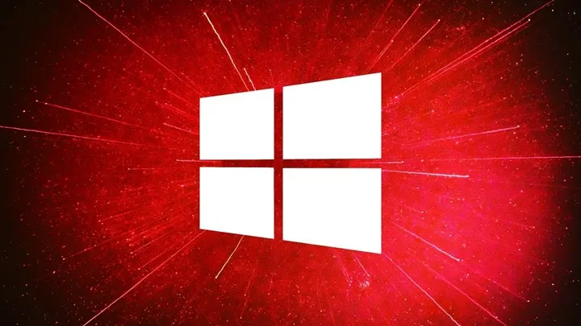
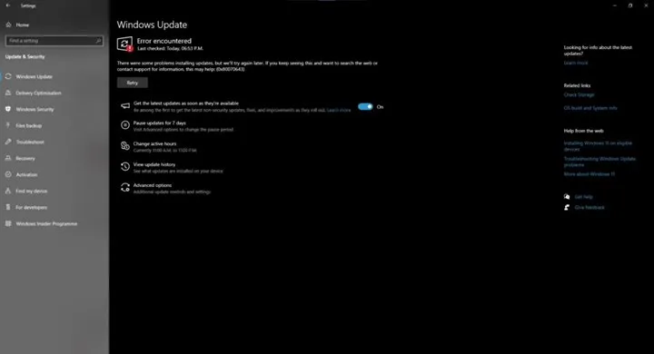

Microsoft, Windows 10’daki can sıkan bir sorunu çözemediğini kabul etti.
''Microsoft, haftalar önce yayınlanan Windows 10 KB5034441 güncellemesindeki sorunları çözemediğini doğruladı.
Kullanıcılar, “0x80070643 - ERROR_INSTALL_FAILURE” sorununu kendileri çözecek.''

Microsoft, geçtiğimiz ocak ayında Windows 10 ve 11 için yayınladığı KB5034441 güncellemesinde saldırganların
WinRE (Windows Kurtarma Ortamı) kullanarak BitLocker şifrelemesini atlamasına izin verebilecek önemli bir
güvenlik açığını gidermişti. Ancak ilginç bir şekilde bu güncellemeyi yüklemeye çalışan Windows 10 kullanıcılar,
haftalardır “0x80070643 - ERROR_INSTALL_FAILURE” hatasıyla karşılaşıyor. Bu sorun bazında Microsoft, bir
güncelleme paylaşarak ilgili hatayı gidermeyeceğini sessizce doğruladı.
Microsoft, Windows 10 hatasını düzeltmeyecek

İlgili Windows 10 KB5034441 güncellemesini yüklerken karşılaşılan hata mesajı esasında kurtarma bölümündeki
yetersiz alandan kaynaklanıyor. Bu güncelleştirmenin başarıyla yüklenmesi için kurtarma bölümünde 250 MB boş
alan gerekiyor, eğer boş alan yoksa güncelleme başarısız oluyor. Microsoft, gelecekteki bir Windows
güncellemesinde bu alanı otomatik olarak oluşturmayacağını belirtiyor.
Öte yandan yazılım devi ilgili sorunu kullanıcıların manuel olarak çözmesini istiyor. Bu manuel çözüm komut
istemi aracılığıyla yapılacak. Microsoft, WinRE alanını genişletmek için burada bir rehber sunuyor.
Öte yandan aynı güncelleme KB5034440 ile Windows 11’e de gelmişti. Windows 11 kullanıcıları da aynı “0x80070643
- ERROR_INSTALL_FAILURE” hatayla karşılaşıyor. Microsoft’un manuel çözümü Windows 11 kullanıcıları için de
uygulanabiliyor. Bununla birlikte firma, Windows 11’de sorunu bir güncellemeyle çözüp çözmeyeceği konusunda bir
şey söylemedi.